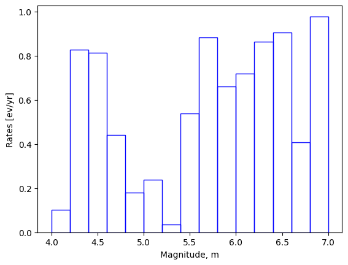

Evenly Discretised Magnitude-Frequency Distribution (MFD)
The typologies of Magnitude-Frequency Distribution (MFD) supported by the OQ Engine are available in this folder. A description of these distributions is available here.
The main models supported are:
Double Truncated MFD
Evenly Spaced MFD
Arbitrary MFD
Tapered MFD
Youngs and Coppersmith MFD
In this notebook, we briefly show how you can utilize evenly discretised MFD as an example.
[1]:
import pandas as pd
import numpy as np
import matplotlib.pyplot as plt
from openquake.hazardlib.mfd import EvenlyDiscretizedMFD
For EvenlyDiscretizedMFD, you need magnitudes, magnitude step, and rates for each magnitude as requirements.
[2]:
magnitude_step = 0.2
magnitudes = np.arange(4.1, 7.0, magnitude_step)
rates = np.random.rand(magnitudes.size)
[3]:
# Histogram plot
_ = plt.bar(magnitudes, rates, width=magnitude_step, fc='none', ec='blue')
_ = plt.xlabel('Magnitude, m')
_ = plt.ylabel('Rates [ev/yr]')

[4]:
# Create the Evenly Discretised MFD
mfd = EvenlyDiscretizedMFD(min(magnitudes), magnitude_step, rates)
Each magnitude-frequency available in the OQ Engine offers a number of default methods including:
check_constraints: controls the instantiation of the MFD based on the information provided,get_annual_occurrence_rates: returns a list of tuples, each one containing a magnitude and the corresponding rate,get_min_max_mag: returns the minimum and maximum magnitudes,modify_set_mfd: applies absolute modification of the MFD from the min_mag, bin_width, and occurrence_rates modification.
[5]:
mocc = mfd.get_annual_occurrence_rates()
[6]:
mags = np.array([m[0] for m in mocc])
rtes = np.array([m[1] for m in mocc])
[7]:
df_mocc = pd.DataFrame({
"Magnitudes": mags,
"Rates": rtes
})
display(df_mocc)
| Magnitudes | Rates | |
|---|---|---|
| 0 | 4.1 | 0.102031 |
| 1 | 4.3 | 0.826247 |
| 2 | 4.5 | 0.812529 |
| 3 | 4.7 | 0.441247 |
| 4 | 4.9 | 0.181112 |
| 5 | 5.1 | 0.238289 |
| 6 | 5.3 | 0.034432 |
| 7 | 5.5 | 0.537567 |
| 8 | 5.7 | 0.882729 |
| 9 | 5.9 | 0.660822 |
| 10 | 6.1 | 0.719110 |
| 11 | 6.3 | 0.861916 |
| 12 | 6.5 | 0.905983 |
| 13 | 6.7 | 0.408337 |
| 14 | 6.9 | 0.977984 |